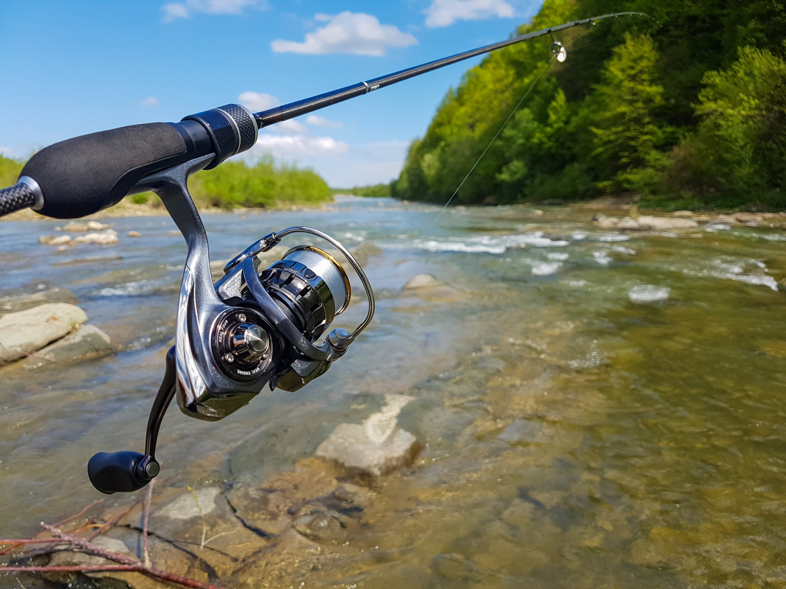

Spinning

Τι είναι το spinning
Το spinning είναι τεχνική ψαρέματος με τεχνητά δολώματα, όπου ο ψαράς κάνει συνεχείς ρίψεις και μαζέματα, δίνοντας στο τεχνητό κίνηση που μιμείται ζωντανό μικρόψαρο ή άλλη λεία. Βασίζεται κυρίως στη χρήση μηχανισμού spinning με σταθερό καρούλι, που επιτρέπει εύκολες και μακρινές βολές με σχετικά ελαφριά δολώματα.
Εξοπλισμός
Χρειάζεται καλάμι spinning (συνήθως 2,10–3,00 m ανάλογα με το αν ψαρεύουμε από βάρκα ή ακτή), μηχανισμός με ομαλά φρένα και λεπτό νήμα ή πετονιά για καλύτερη αίσθηση του τεχνητού. Τα δολώματα μπορεί να είναι minnow, σιλικονούχα, κουταλάκια, πλανάκια ή poppers, επιλεγμένα ανάλογα με το βάθος, τα ψάρια και τις συνθήκες (κύμα, διαύγεια).
Πώς δουλεύει η τεχνική
Ο ψαράς ρίχνει το τεχνητό σε σημεία όπου υποψιάζεται ότι κινούνται αρπακτικά (βράχια, ρεύματα, κοψίματα βυθού) και το φέρνει πίσω με διάφορους ρυθμούς και κινήσεις, αλλάζοντας την ταχύτητα, τα κοψίματα της μύτης του καλαμιού και τις παύσεις. Στόχος είναι να βρεθεί ο τρόπος ανάκτησης που θα «ξυπνήσει» τα ψάρια και θα προκαλέσει επίθεση, παρακολουθώντας ταυτόχρονα την αίσθηση του τεχνητού και τυχόν χτυπήματα στη γραμμή.
Πού χρησιμοποιείται
Το spinning εφαρμόζεται σε ποτάμια, λίμνες και θάλασσα, από ακτή ή βάρκα, για είδη όπως λαβράκια, λίτσες, λούτσους, κυνηγούς, πέστροφες και πολλά ακόμη αρπακτικά. Στη Μεσόγειο, το παράκτιο spinning είναι ιδιαίτερα δημοφιλές, γιατί επιτρέπει στον ψαρά να «ψάξει» γρήγορα μεγάλες εκτάσεις και να εντοπίσει ψάρια που κυνηγούν κοντά στην επιφάνεια ή σε μεσόνερα.